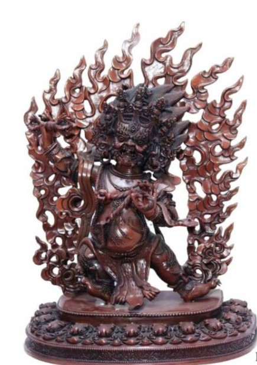
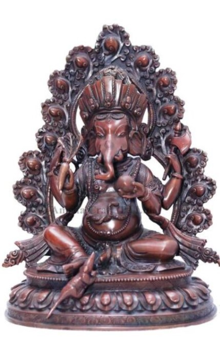

Nepali Ancient Statues
Nepali ancient statues are exquisite works of art that reflect the rich cultural, religious, and artistic heritage of Nepal. These statues, often crafted from materials like stone, bronze, and wood, depict deities, kings, and various figures from Hinduism and Buddhism, which have historically shaped the spiritual landscape of the country. The intricate detailing and vibrant expressions captured in these sculptures are a testament to the high level of craftsmanship and artistry that Nepali artisans have perfected over centuries. Many of these statues are associated with specific temples, stupas, or palaces, and they often serve as objects of worship or veneration. Notable examples include the statues of Buddha, Shiva, and various Hindu deities, often adorned with fine jewelry, elaborate robes, and serene facial expressions that convey a sense of divinity and peace.
 
Significance of Nepali Ancient Statues
The significance of Nepali ancient statues goes far beyond their aesthetic beauty; they are vital symbols of Nepal's rich spiritual and cultural traditions. These statues represent the deep connections between the people and their deities, and they serve as focal points for religious rituals, festivals, and meditation. They also embody the philosophical and theological principles of the religions practiced in Nepal, such as Buddhism, Hinduism, and the Newar traditions. Moreover, these statues have an enduring historical significance, offering valuable insight into the evolution of Nepali art, craftsmanship, and religious thought. The preservation of these ancient statues is crucial, as they not only stand as a link to Nepal's past but also continue to inspire admiration and devotion, forming an integral part of the national identity.